Rien n'est implémenté. Les maquettes sont statiques (route /lab/features, capturées avec Playwright) et servent à comprendre l'idée, pas à juger le style. Triées par rapport valeur / effort. Cadrage et veille faits avec l'agent product-lead.
app/session/page.tsx : if (!isBreak && isRunning) adapter.play(); else adapter.pause();), rien n'apparaît dans les contrôles média du système, et aucun concurrent (Lofidoro, Pomofocus, Lofizen…) ne soigne cette jonction. C'est pourtant la priorité produit « timer + lecteur ensemble ».statsStore, distractionStore et playHistoryStore ne relient pas titres écoutés, distractions et heure. Un petit journal par pomodoro (sessionLogStore, local) ouvre l'idée la plus différenciante (« Tes titres qui marchent »).| # | Idée | Catégorie | Effort | Valeur | Supabase |
|---|---|---|---|---|---|
| 1 | FocusFlow dans le système | Cœur | S | 4,5 | Non |
| 2 | Reprendre là où tu t'es arrêté | Cœur | S | 4,5 | Non |
| 3 | Go sur tous les blocs | Organisation | S | 3,5 | Non |
| 4 | Partager par lien | Petite idée / social | S | 3,5 | Non |
| 5 | Pauses en musique | Cœur / musique | M (lot A : S) | 4,5 | Non |
| 6 | Tes titres qui marchent (audacieuse) | Musique | M | 4 | Non |
| 7 | Série à deux, avec jour de repos | Social / motivation | M (lot 0 : S) | 4 | Lot 0 non, duo oui |
| 8 | Revue du dimanche | Organisation | M | 4 | Non |
| 9 | Promesse aux amis (audacieuse) | Social / motivation | M | 3,5 | Oui, sans migration |
| 10 | Radio commune (audacieuse) | Musique / social | M | 3,5 | Non (amis en bonus) |
Le temps restant et le titre en cours dans l'onglet, sur l'écran verrouillé et dans les contrôles média. Les touches média pilotent la session.
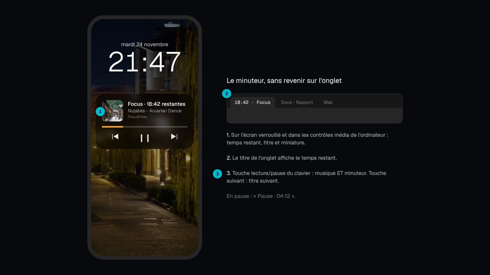
Tu rédiges dans Google Docs, FocusFlow est dans un autre onglet. Pour savoir combien il reste, ou pour couper la musique quand le téléphone sonne, il faut revenir sur l'onglet. Sur téléphone, écran verrouillé, tu ne vois rien du tout.
flowchart LR
T["timerStore (secondsLeft, mode)"] --> H["useMediaSession (nouveau hook)"]
M["useSessionMedia (piste en cours)"] --> H
H --> D["document.title"]
H --> MS["navigator.mediaSession (metadata, positionState)"]
K["Touches média / écran verrouillé"] --> MS
MS -- "play / pause" --> P["timer.pause + adapter.pause"]
MS -- "nexttrack" --> N["adapter.next"]
lib/useMediaSession.ts, monté dans app/session/page.tsx. Lit store/timerStore.ts et lib/playback/useSessionMedia.ts. Mêmes actions que components/PipTimer.tsx.Gratuit / local-first : oui, sans compte.
En fin de session, une ligne pour dire où tu en es. Le lendemain, elle t'attend sur l'accueil, avec la vidéo reprise à la bonne seconde.
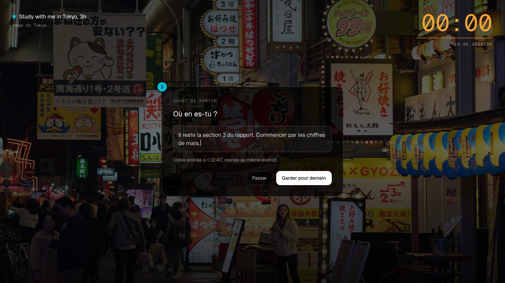
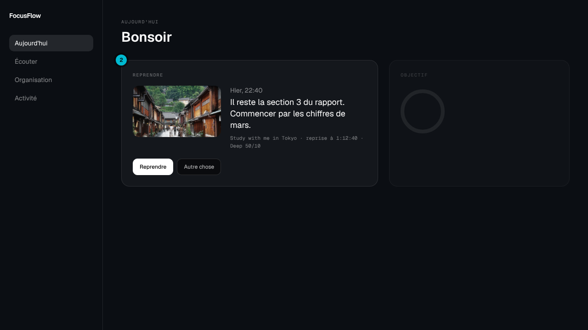
Le soir, tu arrêtes en plein chapitre. Le lendemain matin, tu perds dix minutes à te rappeler où tu en étais, et la vidéo « Study with me » de 3 h repart de zéro. C'est l'astuce d'Hemingway (s'arrêter en sachant quoi faire ensuite), rendue automatique.
Ce n'est pas la « capture rapide d'idées » refusée : une seule note, au moment de partir, qui ne sert qu'à reprendre.
flowchart TD
E["Terminer (session)"] --> Q{"Note saisie ?"}
Q -- oui --> S["resumeStore : note, mediaKey, position, preset"]
Q -- non --> S2["resumeStore : mediaKey, position, preset"]
S --> C["TodayDashboard : carte Reprendre"]
S2 --> C
C -- "Reprendre" --> L["sessionStore.selectVideo + timer preset"]
L --> P["adapter.load(startSeconds) puis /session"]
P --> N["Note affichée en haut de la session"]
store/resumeStore.ts (persist, une entrée). Ou un champ dans playHistoryStore.app/session/page.tsx (Terminer), lib/playback/youtube.ts (position actuelle et startSeconds, déjà déclaré dans YTPlayer.loadPlaylist), components/TodayDashboard.tsx (la carte « Reprendre » existe déjà via lib/suggestions.ts, on l'enrichit, pas de tuile en plus).lib/stateSync.ts (clé user_state existante, aucune migration).position_ms). Twitch live : pas de position, on garde la note seule.Gratuit / local-first : oui.
Quand un bloc planifié commence, une invitation « Rédaction commence » le lance en un clic, avec la bonne durée et la tâche.
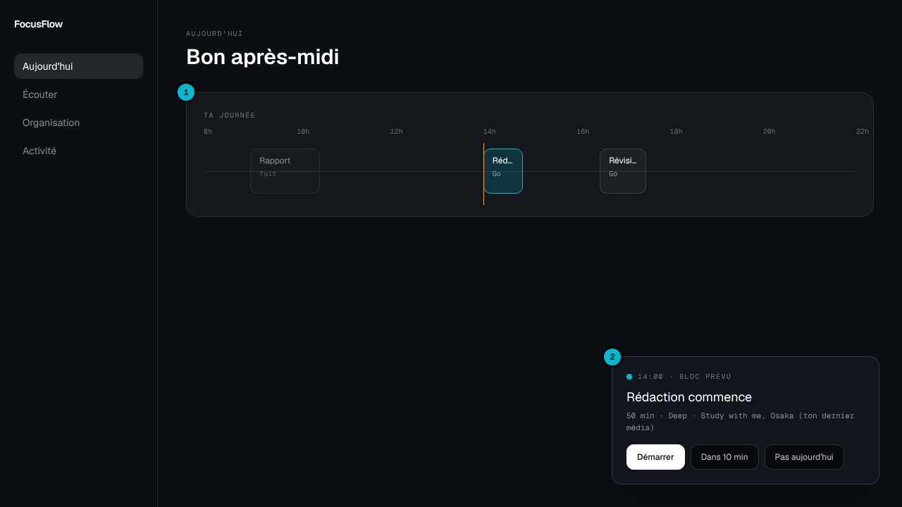
Tu as posé tes blocs de la semaine dans le planning. À 14 h, il faut tout reconfigurer à la main (média, preset, tâche), alors le bloc reste théorique. Le Sprint a déjà son « Go », les blocs ordinaires non.
flowchart LR
P["planStore.blocksForDate(aujourd'hui)"] --> W["Veilleur (1 / min)"]
W -- "startMin atteint" --> T["Toast + Notification"]
T -- "Démarrer" --> G["lib/goBlock.ts (extrait du Go Sprint)"]
G --> S["sessionStore.addTodo + selectVideo"]
G --> TM["timerStore preset"]
G --> R["/session"]
R -- "fin" --> D["planStore.toggleDone"]
store/planStore.ts, components/TodayDashboard.tsx et store/sprintStore.ts (logique Go à extraire dans lib/), components/WeekPlanner.tsx, store/sessionStore.ts, components/Toast.tsx.Gratuit / local-first : oui.
Une session prête à démarrer, une playlist locale ou une routine, entièrement contenue dans un lien. Celui qui l'ouvre voit l'aperçu et l'importe, sans compte ni serveur.
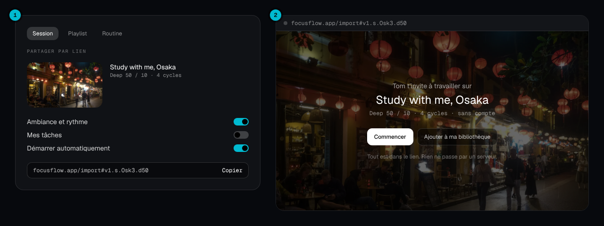
Tu as monté une playlist de révision ou une routine qui marche, et tu veux la donner à ton groupe de TD. Aujourd'hui c'est impossible hors amis Supabase. C'est aussi le premier pas honnête vers la « marketplace » de la roadmap, et un moyen d'acquisition (le lien fonctionne sans compte).
flowchart LR
A["Playlist / routine / session"] --> E["lib/shareLink.ts encode (version, IDs YouTube, preset)"]
E --> U["/import#v1..."]
U --> V["Validation stricte (regex IDs, bornes)"]
V --> O["oEmbed : titres et miniatures"]
O --> I["Aperçu"]
I -- "Ajouter" --> L["localPlaylistStore / routineStore"]
I -- "Commencer" --> S["/settings ou /session"]
lib/shareLink.ts (codec testé avec vitest) et app/import/page.tsx (hors AuthGate). store/localPlaylistStore.ts, store/routineStore.ts, lib/routines.ts, components/LocalPlaylistModal.tsx, components/RoutinesManager.tsx.fetchVideoMeta).Gratuit / local-first : oui, la partie après # ne part même pas au serveur.
Plus de coupure sèche : la musique s'efface en fin de focus et revient en douceur. Pendant la pause, tu choisis : silence, même musique plus bas, ou ta playlist « Pauses ».
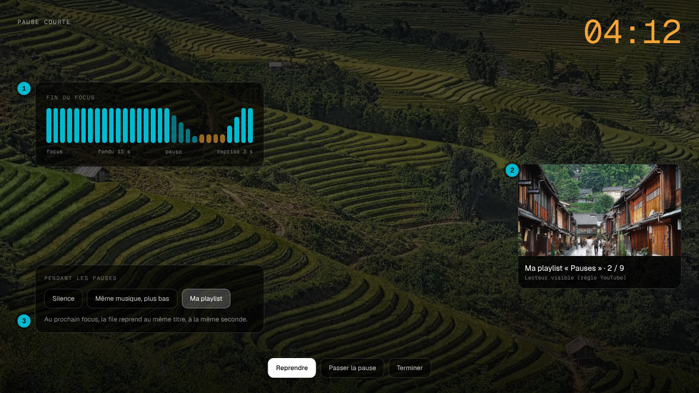
À 00:00 la musique est coupée en plein morceau, puis la reprise repart à plein volume. Et en pause, ceux qui veulent autre chose relancent YouTube à la main, et perdent leur place dans la file.
/settings ou la routine), silence, même musique à 30 %, ou une playlist locale.
flowchart TD
F["Focus : secondsLeft <= 15"] --> FD["Fondu : adapter.setVolume par paliers"]
FD --> B{"Réglage pause"}
B -- "Silence" --> S1["adapter.pause (actuel)"]
B -- "Plus bas" --> S2["setVolume 30 %"]
B -- "Ma playlist" --> S3["Sauver (titre, position) puis jouer la playlist Pauses (lecteur visible)"]
S1 --> R["Retour focus : restaurer titre + position, montée 3 s"]
S2 --> R
S3 --> R
app/session/page.tsx (effet play/pause), lib/playback/types.ts (setVolume, caps.volume existent), lib/playback/{youtube,spotify,twitch}.ts, lib/playback/queue.ts, store/playbackPrefsStore.ts, store/localPlaylistStore.ts, store/routineStore.ts + lib/routines.ts (champ optionnel breakMedia).Lots : A fondus + « plus bas » (S) · B playlist de pause YouTube · C Spotify. Gratuit / local-first : oui.
FocusFlow repère les morceaux avec lesquels tu te concentres le mieux, et en fait une playlist.
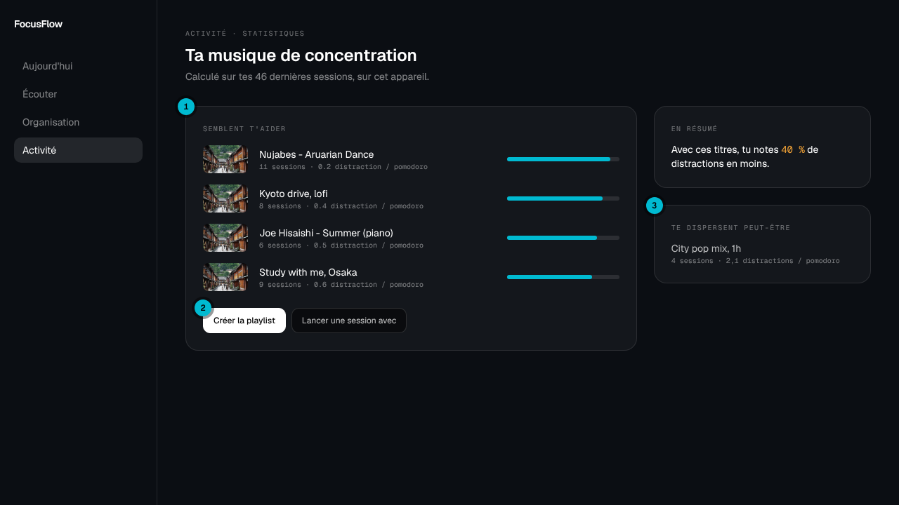
Tu changes de musique au hasard sans savoir ce qui t'aide vraiment. Endel ou Spotify optimisent l'écoute, aucun concurrent ne relie la musique à une concentration mesurée. FocusFlow a les deux moitiés : ce qui joue, et les distractions marquées.
flowchart LR
S["/session (fin de pomodoro)"] --> L["sessionLogStore (nouveau) : début, fin, minutes, distractions, titres"]
D["distractionStore.sessionCount"] --> L
M["useSessionMedia (titres joués)"] --> L
L --> C["lib/musicFocus.ts (calcul pur, seuils)"]
C --> UI["Carte dans InsightsContent"]
UI -- "Créer la playlist" --> P["localPlaylistStore.createPlaylist + addTrack"]
store/sessionLogStore.ts (local, plafonné à 500 entrées), alimentée par app/session/page.tsx. Nouveau lib/musicFocus.ts testé avec vitest. Carte dans la vue Statistiques (app/insights/page.tsx / InsightsContent). store/localPlaylistStore.ts.user_state en option plus tard). Pas d'API.Gratuit / local-first : oui, rien ne quitte l'appareil.
Une série commune avec un ami : elle grandit chaque jour où vous faites tous les deux au moins un pomodoro. Et un jour de repos par semaine est toléré, en solo comme à deux.
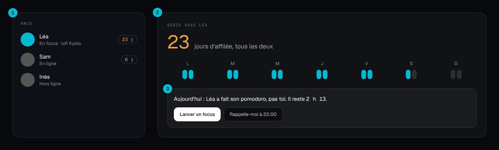
Ta série solo casse au premier dimanche off et culpabilise. Seul, on lâche vite. Avec Léa, qui révise le même concours, une série partagée vous tient tous les deux. Les amis existent déjà dans FocusFlow, mais aucun engagement réciproque.
flowchart TD
A["Chat : Proposer une série"] --> R1["RPC propose_duo_streak"]
R1 --> B["L'ami accepte : RPC accept_duo_streak"]
B --> T["duo_streaks (paire, compteur, dernier jour)"]
ST["statsStore (jour local)"] --> TK["RPC tick_duo_streak (contrôle serveur)"]
TK --> T
T --> UI["FriendsPanel + FriendChat"]
ST --> L0["Lot 0 : getStreak tolère 1 jour / semaine"]
store/statsStore.ts (getStreak), affichages de série (StatsSection, TodayDashboard, lib/achievements.ts à vérifier).supabase/schema.sql (table duo_streaks, RLS, RPC SECURITY DEFINER comme accept_friend_request), lib/friends.ts, store/friendsStore.ts, components/FriendChat.tsx, components/FriendsPanel.tsx.Gratuit / local-first : lot 0 oui. Le duo est un bonus en ligne, comme tout le volet amis.
Trois minutes guidées pour clore la semaine : ce qui a été fait, ce qui ne l'est pas (garder, reporter, abandonner), puis les blocs de la semaine suivante.
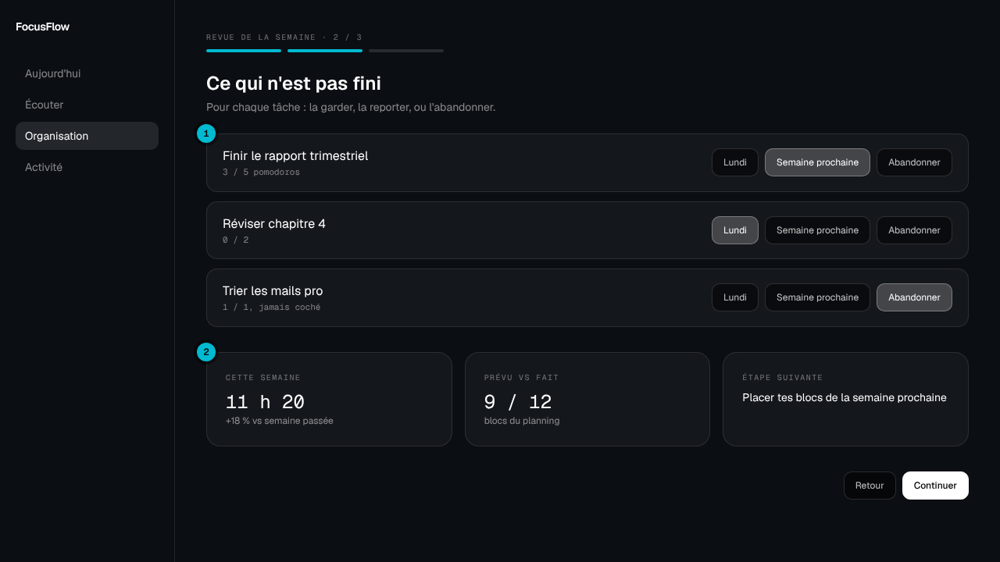
Le Kanban se remplit de tâches à moitié faites, le planning de la semaine prochaine est vide, et le Wrapped montre des chiffres sans rien faire décider. Dimanche soir, tu veux repartir propre lundi sans y passer une heure.
flowchart LR
W["lib/wrapped.ts (agrégats)"] --> E1["Étape 1 : bilan"]
P["planStore (prévu vs fait)"] --> E1
E1 --> E2["Étape 2 : sessionStore.todos non faites"]
E2 -- "reporter / abandonner" --> TD["sessionStore.updateTodo / remove"]
E2 --> E3["Étape 3 : WeekPlanner pré-rempli"]
E3 --> PB["planStore.addBlock (puis ICS)"]
E3 --> F["reviewStore.lastWeekReviewed"]
components/WeeklyReview.tsx (sous-onglet ou modal portalé d'Organisation). Réutilise lib/wrapped.ts, store/planStore.ts, store/sessionStore.ts, components/WeekPlanner.tsx, store/wrappedStore.ts (même mécanique de bannière). Petit store/reviewStore.ts.Gratuit / local-first : oui.
Tu annonces un objectif du soir (« 3 pomodoros avant 23:00 ») à quelques amis. Ils suivent ta progression et voient si tu l'as tenu.
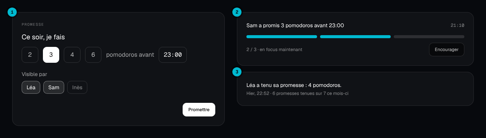
L'objectif quotidien est privé : personne ne sait si tu le lâches. Le dire à quelqu'un change tout (c'est le ressort de Focusmate), mais sans réserver un créneau ni passer en visio. Ici, c'est asynchrone et ça tient en un geste.
flowchart LR
F["Promettre (n, heure, amis)"] --> M["friend_messages : corps réservé (comme CHEER_BODY)"]
S["statsStore.days[aujourd'hui].sessions"] --> FS["friend_stats (agrégats déjà partagés)"]
M --> V["Chez l'ami : carte promesse"]
FS --> V
V -- "Encourager" --> C["Encouragement existant"]
H["Heure limite"] --> R["Résultat calculé côté client"]
friend_messages (aucune migration), progression lue dans friend_stats (déjà partagé). lib/friends.ts, store/chatStore.ts, components/FriendsPanel.tsx, components/FriendChat.tsx, components/TodayDashboard.tsx.Gratuit / local-first : bonus en ligne (comme tout le volet amis).
Une radio FocusFlow : tout le monde entend la même vidéo du catalogue au même moment, comme une vraie radio. Sans serveur : le programme se calcule à partir de l'heure.
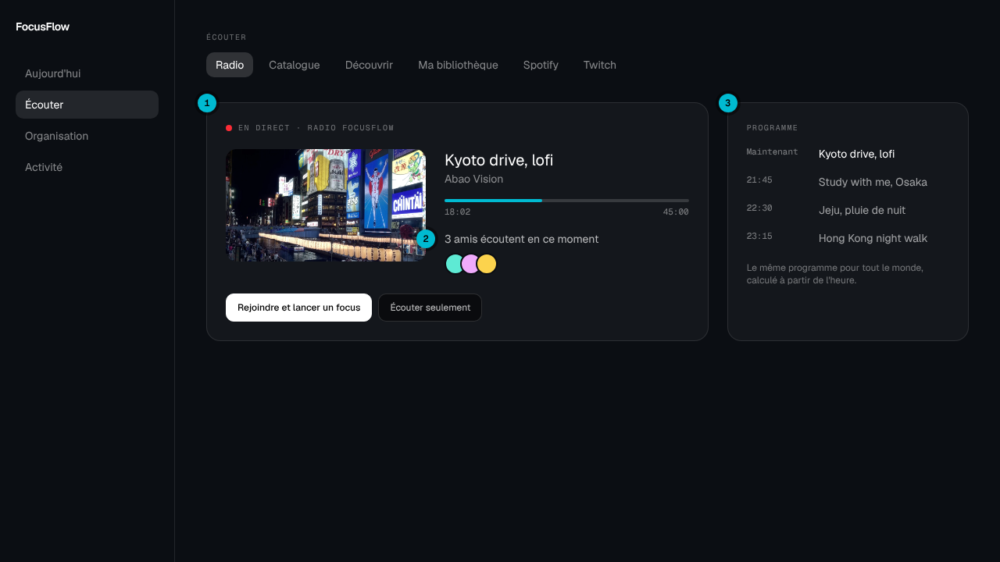
Choisir sa musique est en soi une source de procrastination, et travailler seul pèse. La radio enlève le choix et donne la sensation d'être plusieurs (comme le live Lofi Girl), sans salle ni minuteur partagé, donc sans retomber dans les Focus Rooms refusées.
flowchart LR
C["data/videos.ts + durées fixes"] --> G["lib/radio.ts : programme(epoch UTC)"]
CL["Horloge (Date.now)"] --> G
G --> N["vidéo + seconde de départ"]
N --> Y["adapter.load(videoId, startSeconds)"]
Y -- "ENDED" --> G
FS["friend_stats.activity = Radio (bonus)"] --> UI["3 amis écoutent"]
lib/radio.ts (calcul pur, testé), durées des vidéos du catalogue figées dans data/videos.ts. Nouvel onglet dans app/page.tsx (MediaTab, store/navStore.ts). lib/playback/youtube.ts (startSeconds), lib/playback/useSessionMedia.ts (nouvelle source « radio »).friend_stats.activity existant). Pas d'API.Gratuit / local-first : oui.